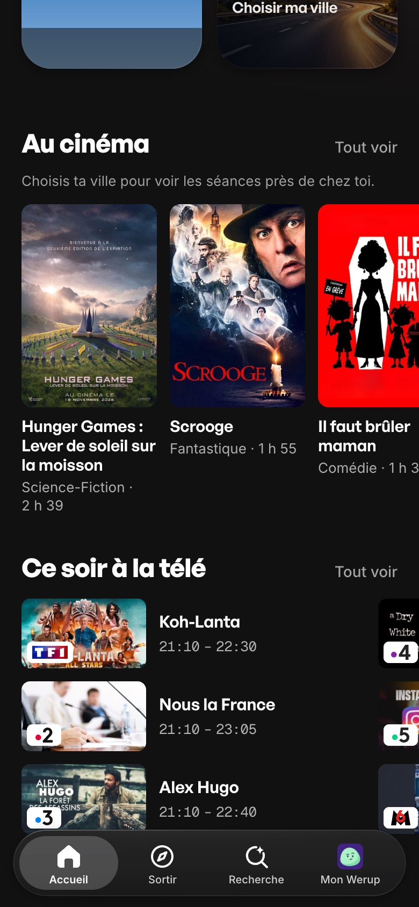
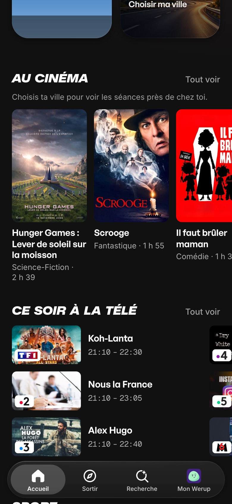
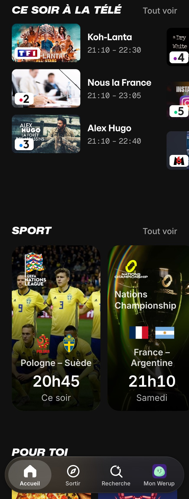

1. Avant (la police sage)Lisible, mais comme toutes les plateformes : rien ne dit « Werup ».

2. Hier soirTrop gros, les mots se collent : un bloc.3. Réglée, EN LIGNE (ma recommandation)Plus petite, lettres et mots ouverts : on lit mot par mot, et c'est encore le dessin du logo.

3 bis. La même, sur un petit iPhoneElle tient sur une ligne, à côté de « Tout voir ».

4. L'autre piste (non retenue)La même voix en minuscules : très lisible, mais elle quitte les capitales du logo.